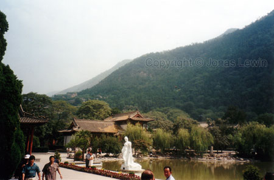
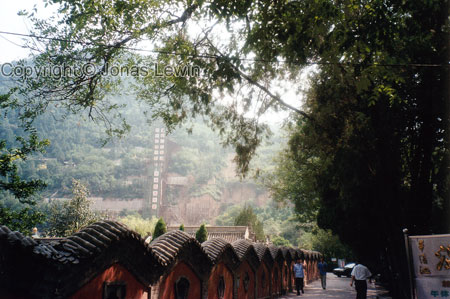
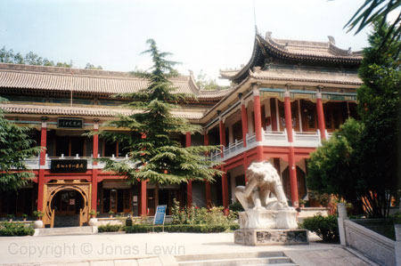
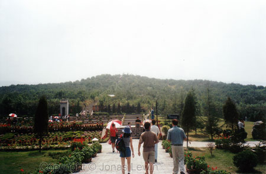
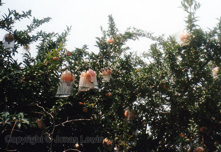
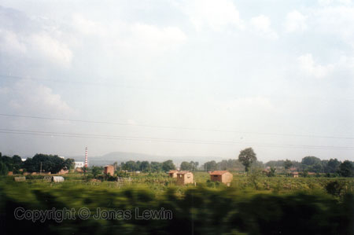

Xian, Shanghai
Xian can be spelled in many different variations: Chi'an, Sian, Tchi An,
etc. But Xian is the correct spelling according to the local people.Here
you can find the Terracotta soldiers. This is said to be the 8th wonder of
the world. I don't find this as exciting as the great wall, but it's the
next best thing in China. If you have the opportunity, this is a place full
with Chinese history. The soldiers are so detailed that you can't believe
it. One carriage (placed after 2 horses) where made from more than 5000
different pieces. The clay soldiers have pattern matching cloth "carved"
into them. Imagine the work of doing that. On thousands of soldiers! One -
OK. Not that much effort. Thousands - here we see the grandness of the
tombs.
Xian
was the previous capital of China. Here's the palace garden, with the
emperor's favorite wife as a statue.

A
museum, that has many things from the emperor on display.
Not
too far away is a great tomb. You would never know that it was a tomb,
unless someone told you. The first thing that you see is a giant hill. The
hill does not seem misplaced, since it lies very close to some mountains.
Walking up to the top takes a good 10 minutes. When you are at the top, the
guide tells you that this hill is created by man - not nature. In china they
like their culture things to be at a greater scale than anywhere else. How
can so many small Chinese create so grand things, and so many fat Americans
not create anything quite the size. Somebody have their priorities all mixed
up.
At
the hill, they grow a very tasty fruit. It must need lots of water/moist,
since they put plastic bags around every single fruit. The bag contains some
water, and is tied up, so the water won't disappear due to the heat. As you
see, it looks quite strange.
Do you know any farmer outside Asia that would do this to protect his
fruits?
The
farmers, and people that lives outside the cities, doesn't have very large
houses. Would you like to spend a day inside any of these houses? Probably
not, and neither does the locals. All they do during the days are work, or
course. It has only the vital functions: roof and a place to sleep.
Possession is an unknown word here.
This is also a great place to buy VCD/DVD. Same price as in Beijing.
Xian was my last place to visit in Asia (I went back to Shanghai for one day
before going home). On this journey I never used the same airline twice. A
very strange experience, but still a nice one.
Although Xian is far from the big cities like Beijing, the air is still full
with the fumes from cars. You never quite get used to it.
|